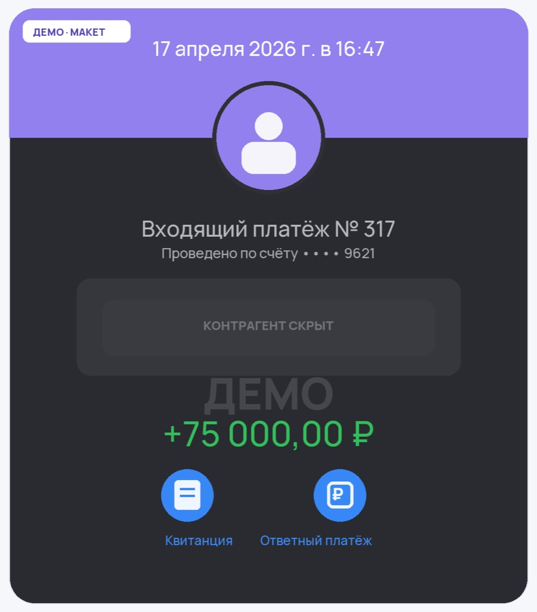

Подборка · Инструменты
Бесплатные нейросети, которые реально открываются в РФ без VPN
6 сервисов, которые грузятся из России напрямую и без копейки. Честный лимит по каждому и с каких начать, чтобы дойти до первых денег.

6 сервисов, которые грузятся из России напрямую и без копейки. Честный лимит по каждому и с каких начать, чтобы дойти до первых денег.
Ты уже видел десятки списков «10 нейросетей без VPN». Открываешь, а там половина через какой-то платный агрегатор за 599 рублей в месяц, вторая половина всё равно просит VPN, и с чего начать, чтобы дойти до первых денег, никто толком не пишет.
Давай честно и по-другому. Вот сервисы, которые реально грузятся из России напрямую и бесплатно, с честным лимитом по каждому, и связка «инструмент, что на нём продавать, первый чек».
DTF, Habr и куча каналов подают ChatGPT, Claude, Gemini и Midjourney как «доступные без блокировок». По факту напрямую из РФ они не открываются. Их гонят через рублёвые прокладки типа Study24, GPTunnel, ЧадGPT, где ты платишь 300-2000 рублей в месяц. Тогда уже платно. Так что если тебе продают «бесплатный ChatGPT», там либо VPN, либо касса.



| Что делаешь | Цена |
|---|---|
| Пост для соцсетей | 800-1000 ₽ |
| Короткая статья | 3-5 тысяч |
| 10 рекламных картинок | около 10 тысяч |
| Короткое видео | 1-1,5 тысячи |
| Первые 5-10 заказов суммарно | 20-40 тысяч |
| На потоке, несколько клиентов в месяц | 80-150 тысяч |
Первый вечер уйдёт целиком, пока залогинишься везде и потыкаешь. Это нормально, дальше быстрее.
«Работает без VPN» не гарантия навсегда. У DeepSeek и Qwen доступ зависит от провайдера и нагрузки, бывают дни, когда сайт грузится через раз. Держи под рукой запасной: не идёт DeepSeek, работаешь на Qwen, легла Алиса, идёшь в GigaChat.
Бесплатные лимиты плавают. Что бесплатно сегодня, завтра может стать платным, особенно у Qwen. Перед тем как пообещать клиенту объём, проверь.
Платные функции из РФ оплатить трудно, нужна валютная карта. Не строй схему заработка на том, что требует зарубежной оплаты.
И главное. Деньги платят за готовый результат: текст, картинку, карточку, ролик. За «доступ к нейросети» не платит никто. Цифры вроде 150 тысяч в месяц это верхний край, на первой неделе их не будет. Первые недели честно закладывай сбор отзывов и те самые 20-40 тысяч. И эти деньги ты сделал с нуля, без вложений и без технического образования.
На бесплатном тест-драйве мы собираем первую работу руками, шаг за шагом. А прямо сейчас, пока помнишь, открой giga.chat и напиши первый запрос. Дальше пойдёт легче.
Забрать бесплатный тест-драйв